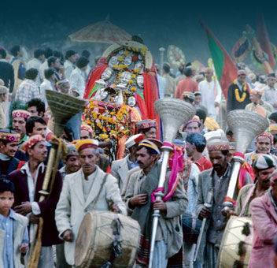

Mahasu Jatara: Perhaps the most popular festival in Mashobra, Mahasu Fair is celebrated in the month of May every year. Lord Shiva is invoked during the festivities and the two-day Jatara that hosts a large number of festivities attracts considerable amount of pilgrims from around the hills.